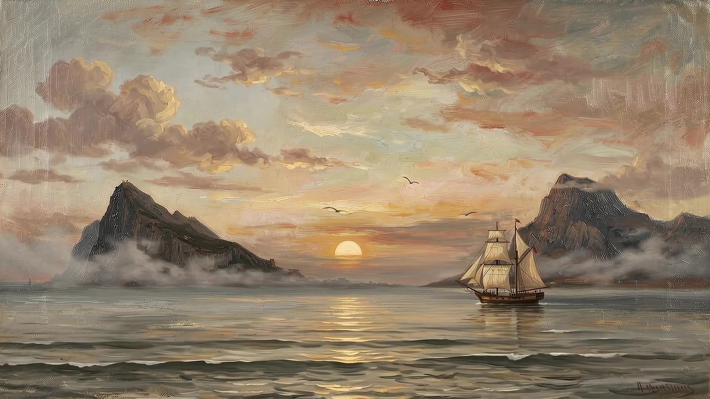

Non plus ultra → Plus Ultra
Beyond the pillars.
The Hispanic world began where the old one ended. Discover 200 years of Hispanic reunification thought in our free pamphlet.
The Institute for Hispano Studies is dedicated to the study, defense and renewal of Hispanic civilization, through films, books, translation and community.